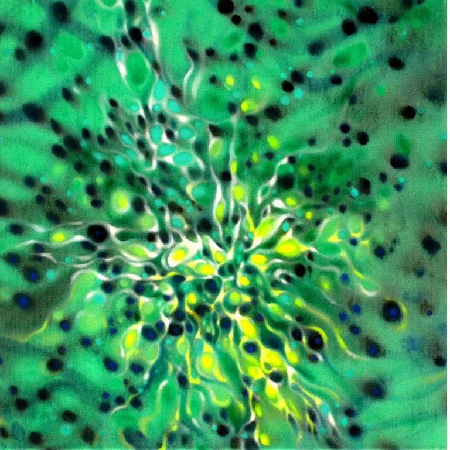

Take a Walk No.8
- Title
- Take a Walk No.8
- Size
- 66 × 66 cm
- Medium
- Acrylic
Image description (what is visible; not the artist’s statement)
Acrylic painting of branching lines and dots radiating from a bright green center

Acrylic painting of branching lines and dots radiating from a bright green center